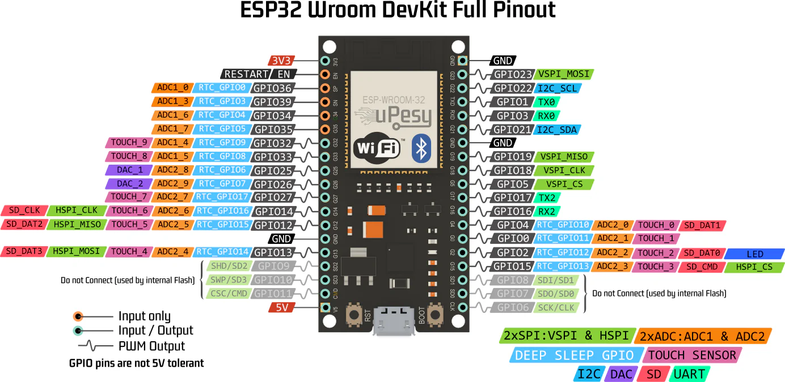
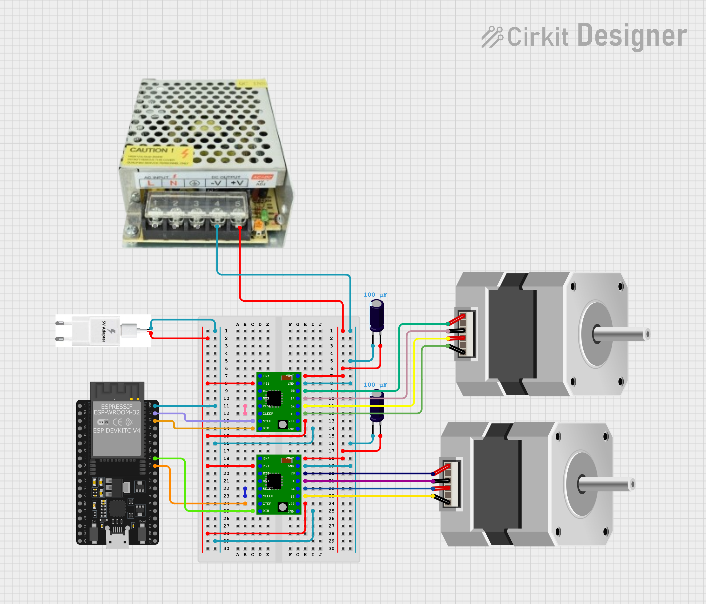
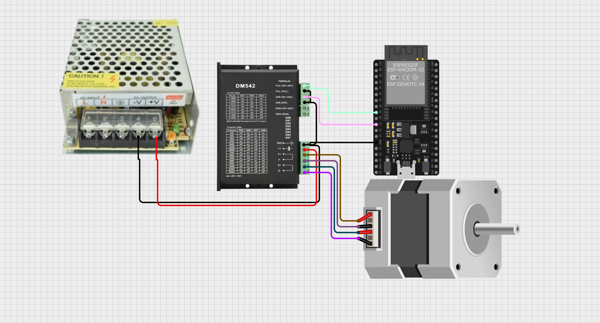

Drivers para Steppers
Driver A4988 - Nema 17
Control de Motor Paso a Paso NEMA 17 con ESP32 y A4988
Especificaciones Generales
¿Qué es un paso?
Un motor NEMA 17 típico tiene 200 pasos por vuelta, es decir: ( 1.8° ) por paso en modo paso completo.
En microstepping, se subdividen los pasos para mayor precisión.
Microstepping |
Pasos por vuelta |
Ángulo por paso |
|---|---|---|
Paso completo |
200 |
1.8° |
Medio paso |
400 |
0.9° |
1/4 paso |
800 |
0.45° |
1/8 paso |
1600 |
0.225° |
1/16 paso |
3200 |
0.1125° |
Configuración de MS1, MS2, MS3 en A4988
Resolución |
MS1 |
MS2 |
MS3 |
|---|---|---|---|
Paso completo |
LOW |
LOW |
LOW |
Medio paso |
HIGH |
LOW |
LOW |
1/4 paso |
LOW |
HIGH |
LOW |
1/8 paso |
HIGH |
HIGH |
LOW |
1/16 paso |
HIGH |
HIGH |
HIGH |
Circuito ESP32 - Motores a paso Nema 17 ESP32 - 38 pines

Circuito
Alimentación del driver A4988 y Vref
¿Cómo ajustar el Vref?
Para un NEMA 17 de 1.2 A y Rs = 0.1 Ω:
Si se usa una configuracion a medio paso es recomendado disminuir el límite de voltaje al 70%.
Control por ESP32 - Código Base (medio paso)
#define STEP_PIN 18
#define DIR_PIN 19
void setup() {
pinMode(STEP_PIN, OUTPUT);
pinMode(DIR_PIN, OUTPUT);
digitalWrite(DIR_PIN, HIGH); // Sentido
}
void loop() {
for (int i = 0; i < 400; i++) {
digitalWrite(STEP_PIN, HIGH);
delayMicroseconds(1000);
digitalWrite(STEP_PIN, LOW);
delayMicroseconds(1000);
}
delay(2000);
}
Control de Motores Paso a Paso con AccelStepper y ESP32
¿Qué es AccelStepper?
AccelStepper es una librería avanzada para controlar motores paso a
paso de forma más eficiente y profesional. Fue creada para reemplazar el
control básico con digitalWrite + delay() con una interfaz más
robusta y no bloqueante.
Ventajas principales
Movimiento suave con aceleración y desaceleración
Control no bloqueante con
.run()Soporta múltiples motores simultáneos
Compatible con distintos tipos de driver (por ejemplo, A4988)
Parámetros clave
Método |
Propósito |
|---|---|
|
Establece la velocidad máxima del motor (pasos/seg) |
|
Establece la aceleración (pasos/seg²) |
|
Fija un destino relativo en pasos |
|
Fija un destino absoluto en pasos |
|
Ejecuta el movimiento hacia el destino suavemente |
|
Devuelve true si el motor sigue en movimiento |
|
Cambia la posición actual sin mover |
Codigo de la ESP32:
#include <AccelStepper.h>
#define STEP_PIN 18
#define DIR_PIN 19
// Modo DRIVER usa 1 pulso por paso (la lógica del driver define el microstepping)
AccelStepper stepper(AccelStepper::DRIVER, STEP_PIN, DIR_PIN);
void setup() {
Serial.begin(115200);
delay(1000);
// Configura velocidad y aceleración
stepper.setMaxSpeed(800); // pasos por segundo (ajusta según tu driver)
stepper.setAcceleration(200); // pasos por segundo^2
// mov(pasos) movimiento relativo
// movTo(pasos) movimiento absoluto
// Función para el Home del robot
}
void loop() {
stepper.moveTo(0);
stepper.runToPosition();
delay(4000);
// Media Vuelta en sentido horario
stepper.move(200);
stepper.runToPosition();
delay(1000);
// Media Vuelta en sentido antihorario
stepper.move(-200);
stepper.runToPosition();
delay(1000);
}
Driver DM542T y NEMA23 PG47
Arquitectura interna del DM542T
El DM542T es un driver digital de lazo abierto para motores paso a paso bipolares.
Internamente contiene:
Etapa de potencia con puentes H para dos bobinas (A y B)
Control digital de corriente (PWM + control senoidal)
Optoacopladores en entradas de control
Lógica de conteo de pulsos STEP/DIR
Protecciones internas:
Sobrecorriente
Sobretemperatura
Subtensión
El driver permite configurar:
Pulsos
Sentido
Corriente configurada
Entradas y salidas del DM542T
La bornera del DM542T se divide en:
Entradas de control (señales)
Salidas de potencia (motor)
Alimentación
Salida de estado/alarma
Terminales |
Función Eléctrica |
Función Lógica |
Comportamiento |
|---|---|---|---|
PUL+ PUL- |
Entrada a un octoacoplador, Cada transición activa del opto genera un incremento interno de contador. |
Cada pulso STEP = un micro-paso, El tamaño del paso depende del microstepping configurado (SW5–SW8) |
El driver incrementa o decrementa el contador de posición interna y Actualiza las corrientes en las bobinas según la tabla senoidal |
DIR+ DIR- |
Entrada optoacoplada y Nivel lógico estable |
Define el sentido de conteo del contador interno: HIGH → sentido A, LOW → sentido B Cuándo se lee DIR. El estado de DIR se muestrea antes del flanco activo del pulso STEP |
Cambia DIR, espera unos microsegundos y envía pulsos STEP |
ENA+ ENA- |
Entrada optoacoplada que controla la habilitación de la etapa de potencia |
Enable activo: Driver energiza bobinas Mantiene torque. Enable inactivo: Driver desenergiza bobinas y motor queda libre |
Permite aumentar el nivel de seguridal al crear paradas de emergencia, y ahorro de energía. |
ALM+ ALM- |
Salida optoacoplada (colector abierto) |
Indica condición de fallo: Sobrecorrient, sobretemperatura, rror interno |
Permite activar actuadores de seguridad (LEDS, Alarmas, entre otros). |
A+/A- B+/B- |
Alimentan las dos bobinas del motor paso a paso bipolar. |
A y B deben ser pares reales de bobina |
Si se cruzan: El motor vibra o No gira correctamente, por lo cual, es importante Identificación de bobinas |
VDC GND |
Alimenta la etapa de potencia y control del driver |
Alimentación de 18 - 50 [v] DC |
No conectar alimentación de 5[v] |
Requisitos eléctricos - Pulso mínimo típico: ≥ 2.5 µs - Recomendado: 5 µs o más - Frecuencia máxima típica: 200 kHz (práctico mucho menor)
Microstepping
Paso real vs resolución de comando
El motor tiene posiciones estables determinadas por su geometría: para 1.8°: 200 pasos por vuelta del eje del motor.
El microstepping no cambia la geometría del motor; el driver:
Interpola corrientes entre bobinas para posicionar el rotor entre pasos.
Mejora suavidad, reduce vibración/ruido.
Reduce el torque por micro-paso (posición intermedia es menos rígida).
¿Por qué existen microsteppings altos (hasta 25600)?
Para suavidad extrema y reducción de resonancia, especialmente en aplicaciones CNC/ópticas.
Para compatibilidad con controladores/PLCs que trabajan con resoluciones específicas.
Contras principales:
Menor torque incremental por micro-paso.
Menor velocidad máxima por aumento de pulsos requeridos.
No mejora la precisión final si existe backlash/flexión mecánica.
Importante
En sistemas con reductora (como PG47), normalmente basta con 200 o 400 pulse/rev para excelente desempeño.
Motor: NEMA23 con reductora
Modelo: 23HS22-2804S-PG47
Motor paso a paso típico: 1.8° por paso (200 pasos por vuelta del eje del motor).
Reductora: PG47 (aprox. 47:1).
La reductora incrementa el torque disponible en la salida y reduce la velocidad.
La reductora también introduce backlash (juego mecánico), por lo que la precisión final depende más de la mecánica que del microstepping alto.
Diagrama de conexión

Imagen
Conexiones
Fuente 24V (+) -> +Vdc (DM542T)
Fuente 24V (-) -> GND (DM542T)
A+ A- (Bobina A)
B+ B- (Bobina B)
DM542T PUL- -> GND ESP32
DM542T DIR- -> GND ESP32
DM542T ENA- -> GND ESP32 (opcional)
ESP32 GPIO_STEP -> DM542T PUL+
ESP32 GPIO_DIR -> DM542T DIR+
ESP32 GPIO_EN -> DM542T ENA+ (opcional)
Configurar el driver para que Pulse/rev = 400:
SW5 = OFF
SW6 = ON
SW7 = ON
SW8 = ON
Corriente del motor (SW1–SW3)
El motor indicado suele ser alrededor de 2.8A RMS nominal. Una configuración segura y práctica es ajustar cerca pero ligeramente por debajo (reduce calentamiento y protege el sistema).
Configuración sugerida:
SW1 = ON
SW2 = OFF
SW3 = OFF
Reducción de corriente en reposo (SW4)
SW4 = OFF (Half Current en reposo)
Menos calentamiento mientras el motor está detenido.
Recomendado para pruebas y uso general.
Ecuaciones
Pasos por vuelta del motor (1.8°)
Ángulo por paso:
Pasos por vuelta del motor:
Pulsos por vuelta del motor con microstepping
Sea:
\(M\) = factor de microstepping (full step: 1, half: 2, quarter: 4, etc.)
Entonces:
Para 400 pulse/rev:
Pulsos por vuelta en la salida con reductora PG47
Sea:
\(R = 47\) relación de reducción.
Entonces:
Con 400 pulse/rev motor:
Resolución angular de comando en la salida
Para el caso:
Conversión: grados → pulsos (salida)
Ejemplo 90°:
Conversión: pulsos → grados (salida)
Velocidad: frecuencia de pulso → RPM de salida
Sea:
\(f_{step}\) frecuencia de pulsos STEP (Hz = pulsos/seg)
Entonces:
Ejemplo con 2000 Hz:
Relación RMS y pico del driver (referencia)
Código ESP32 (AccelStepper) para 400 pulse/rev
Requisitos:
Arduino IDE
Placa ESP32 con core 3.x
Librería AccelStepper
El siguiente ejemplo:
Asume el DM542T configurado a 400 pulse/rev del motor.
Calcula pulsos por vuelta de salida con \(R=47\).
Mueve +90° y vuelve a 0° usando aceleración.
#include <Arduino.h>
#include <AccelStepper.h>
// --------------------
// Pines ESP32
// --------------------
static const int PIN_STEP = 25; // -> PUL+
static const int PIN_DIR = 26; // -> DIR+
static const int PIN_EN = 27; // -> ENA+ (opcional)
// --------------------
// Configuración: 400 pulse/rev del motor (por DIP SW5..SW8)
// Reductora: PG47 ~ 47:1
// --------------------
static const long PULSES_PER_REV_MOTOR = 400;
static const float GEAR_RATIO = 47.0f;
// Pulsos por vuelta del eje de salida (aprox)
static const long PULSES_PER_REV_OUT = (long)(PULSES_PER_REV_MOTOR * GEAR_RATIO + 0.5f);
// Driver en modo STEP/DIR
AccelStepper stepper(AccelStepper::DRIVER, PIN_STEP, PIN_DIR);
// Convierte grados del eje de salida a pulsos
long outDegreesToPulses(float deg_out) {
float pulses = (deg_out / 360.0f) * (float)PULSES_PER_REV_OUT;
return lroundf(pulses);
}
void setup() {
Serial.begin(115200);
pinMode(PIN_EN, OUTPUT);
// ENA: según el cableado del enable del driver, puede requerir invertir
// Para esta prueba, iniciamos habilitado en HIGH.
digitalWrite(PIN_EN, HIGH);
// Ajustes AccelStepper
stepper.setMaxSpeed(2000); // pulsos/seg
stepper.setAcceleration(1500); // pulsos/seg^2
stepper.setMinPulseWidth(5); // us (pulso seguro)
stepper.setCurrentPosition(0);
Serial.println("DM542T + ESP32 listo (400 pulse/rev motor).");
Serial.print("Pulsos/vuelta salida aprox: ");
Serial.println(PULSES_PER_REV_OUT);
}
void loop() {
long p90 = outDegreesToPulses(90.0f);
Serial.println("Moviendo +90° (salida)...");
stepper.moveTo(p90);
while (stepper.distanceToGo() != 0) {
stepper.run();
}
delay(500);
Serial.println("Volviendo a 0° (salida)...");
stepper.moveTo(0);
while (stepper.distanceToGo() != 0) {
stepper.run();
}
delay(1000);
}